FALL / WINTER
PARIS, MILAN, LONDON,
NY and TOKYO
欧米でコレクションを発表する多くのデザイナーが表現したのは、新たな日常を活動的に過ごす女性たちの姿。今の時代に見合う新たな女性性を探求し、あらためてファッションを通して自分らしらを表現することの大切さをたたえた。その中で見られたスタイルやデザインのトレンドとは？まずは今シーズンを物語る6つのキーワードから紹介する。
新時代のパワードレッシング
今シーズンを象徴するテーラードジャケットやコートがカギとなるスタイルを筆頭に、パワフルなルックが目立った。ポイントは、ただ力強いだけでなく、センシュアリティーやセクシーの要素をミックスしていることだ。代表格の「プラダ」は肩の張った厚手のダブルブレスジャケットに透け感のあるタイトスカートを合わせ、「ヴェルサーチェ」はボクシーなオーバーサイズジェケットとマイクロミニスカートのスーツにサテンのビスチエをコーディネート。「アレキサンダー・マックイーン」や「エルメス」のようにダークカラーのレザーを用いたアイテムも豊富だ。
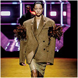
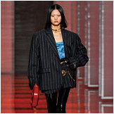
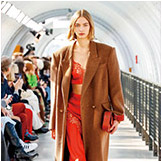
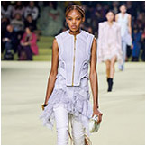
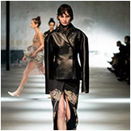
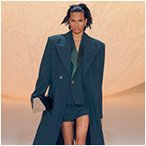
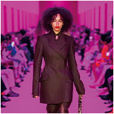
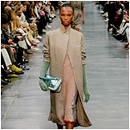
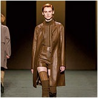
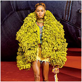
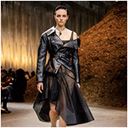
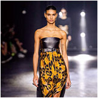
淑女気分でまとう
クラシックなエレガンス
気分は、淑女。華やかな過去に目を向けたエレガンスの表現も広がっている。例えば、「ドリス ヴァン ノッテン」は、カルロ・モリーノのポラロイド作品などに見られるイタリアのクラシックな女性性やグラマー、官能美から着想。「サンローラン」は、作家や政治活動家として活躍し、1920年代を象徴するスタイルアイコンとなったナンシー・キュナードの着こなしからヒントを得た。「シャネル」のようなスカートスーツから、ツイードやベルベット、ジャガードといった素材使いまで、クラシックムードが現代的なシルエットやスタイリングでアップデートされている。
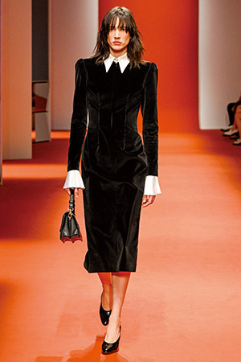
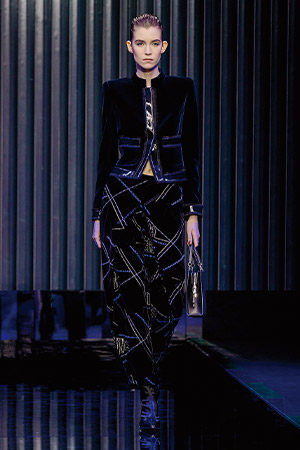
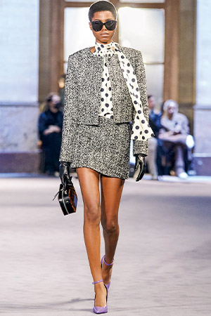
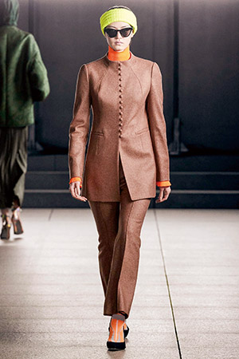
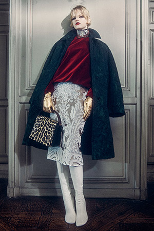
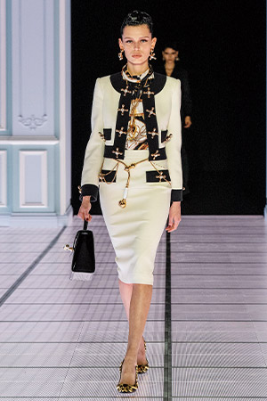
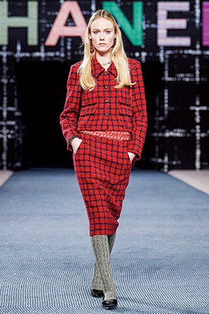
-

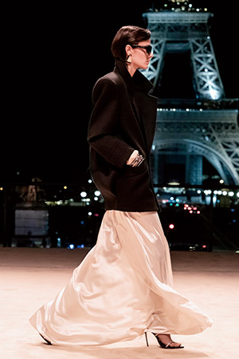
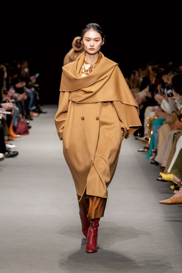
-
淑女気分でまとうクラシックなエレガンス
気分は、淑女。華やかな過去に目を向けたエレガンスの表現も広がっている。例えば、「ドリス ヴァン ノッテン」は、カルロ・モリーノのポラロイド作品などに見られるイタリアのクラシックな女性性やグラマー、官能美から着想。「サンローラン」は、作家や政治活動家として活躍し、1920年代を象徴するスタイルアイコンとなったナンシー・キュナードの着こなしからヒントを得た。「シャネル」のようなスカートスーツから、ツイードやベルベット、ジャガードといった素材使いまで、クラシックムードが現代的なシルエットやスタイリングでアップデートされている。
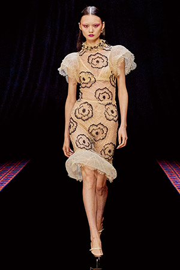
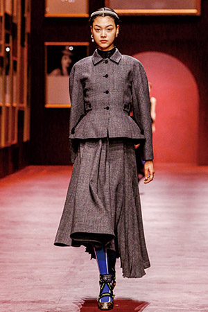

オリジナリティー際立つ
シルエットの探求
装飾は控えめに、シルエットにフォーカスしたデザインも今季のポイントだ。新生「ボッテガ・ヴェネタ」は、テーラードのショートコートとクロップド丈のパンツに、未来派の芸術家ウンベルト・ボッチョーニが1913年に制作した彫刻から着想を得た曲線的なフォームを取り入れ、躍動感を生み出した。90年代のアーカイブからネックラインのヒントを得た「ヴァレンティノ」や、ドレスが風になびく瞬間をモールド成形のレザーで表現した「ロエベ」、伝統的なクチュールのシルエットを取り入れた「サカイ」など、それぞれのアプローチがひかる。
カントリースタイルを都会的に
この秋冬のスポーティ＆アウトドアスタイルは、のどかな風景が浮かぶカントリームードが際立っている。キーアイテムは、パッチポケットやファスナー使いが印象的なユーティリティージャケットから、キルティングやパファーを用いたアウター、ラバーブーツまで。それらを都会的な着こなしとして表現した「ディオール」や「シャネル」「バーバリー」などがお手本となる。また、雪山にあるコテージで過ごすような「マックスマーラー」のコージーなスタイルや「クロエ」や「ルメール」のノマドな雰囲気のルックも、ほっこりしたイメージにつながる。
思い思いにアレンジする
制服スタイル


{kind=link}
{kind=link}
{kind=link}
{kind=link}
{kind=link}
{kind=link}
{kind=link}
{kind=link}
{kind=link}
{kind=link}
{kind=link}
{kind=link}
異なるテイストを
大胆にリミックス
まるでビンテージショップで見つけたようなアイテムを取り入れたスタイルも、若者を中心に古着の人気が高まる今のムードを反映している。ポイントは、自由なマインドで異なるテイストも大胆に組み合わせることだ。例えば、青春時代を出発点にした「ルイ・ヴィトン」は、マキシ丈のプリーツドレスに、ノスタルジックな花柄のセーターとスニーカーを合わせた。一方、「コーチ」や「エトロ」は、それぞれのシグネチャーを再解釈してリミックス。「ディースクエアード」は世界を飛び回る旅人をイメージしたボヘミアンなレイヤードルックを提案した。